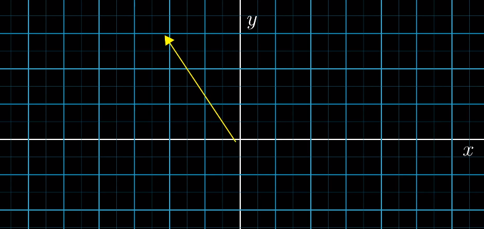
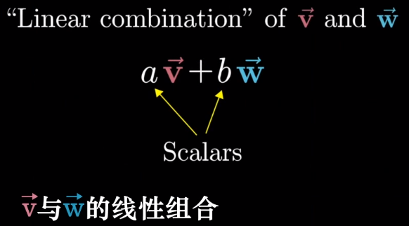
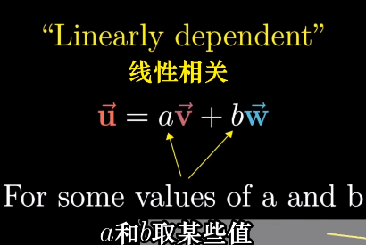

<!DOCTYPE html>
<html>
<head><meta name="generator" content="Hexo 3.8.0">
    <meta charset="utf-8">
    
    <title>线性代数的本质 | sacomplex</title>
    
    
        <meta name="keywords" content="Linear Algebra,3Blue1Brown">
    
    <meta name="viewport" content="width=device-width, initial-scale=1, maximum-scale=1">
    <meta name="description" content="序言
 
 为什么矩阵乘法要如此定义?
 为什么叉积(cross product)与行列式(determinant)有所关联?
 特征值(eigenvalue)究竟代表了什么
 
 数值运算(Numeric operations)与几何直观(Geometric intuition)
 
 几何直观:
 
 用于判断出解决特定问题需要什么工具,感受它为什么有用,以及如何解读最终结果
 
 数值运算">
<meta name="keywords" content="Linear Algebra,3Blue1Brown">
<meta property="og:type" content="article">
<meta property="og:title" content="线性代数的本质">
<meta property="og:url" content="sacomplex.gitee.io/2019/06/07/数学/线性代数的本质/index.html">
<meta property="og:site_name" content="sacomplex">
<meta property="og:description" content="序言
 
 为什么矩阵乘法要如此定义?
 为什么叉积(cross product)与行列式(determinant)有所关联?
 特征值(eigenvalue)究竟代表了什么
 
 数值运算(Numeric operations)与几何直观(Geometric intuition)
 
 几何直观:
 
 用于判断出解决特定问题需要什么工具,感受它为什么有用,以及如何解读最终结果
 
 数值运算">
<meta property="og:locale" content="default">
<meta property="og:image" content="sacomplex.gitee.io/2019/06/07/数学/线性代数的本质/01.png">
<meta property="og:image" content="sacomplex.gitee.io/2019/06/07/数学/线性代数的本质/02.png">
<meta property="og:image" content="sacomplex.gitee.io/2019/06/07/数学/线性代数的本质/03.png">
<meta property="og:image" content="sacomplex.gitee.io/2019/06/07/数学/线性代数的本质/04.png">
<meta property="og:image" content="sacomplex.gitee.io/2019/06/07/数学/线性代数的本质/05.png">
<meta property="og:image" content="sacomplex.gitee.io/2019/06/07/数学/线性代数的本质/06.png">
<meta property="og:image" content="sacomplex.gitee.io/2019/06/07/数学/线性代数的本质/07.png">
<meta property="og:image" content="sacomplex.gitee.io/2019/06/07/数学/线性代数的本质/08.png">
<meta property="og:image" content="sacomplex.gitee.io/2019/06/07/数学/线性代数的本质/09.png">
<meta property="og:image" content="sacomplex.gitee.io/2019/06/07/数学/线性代数的本质/10.gif">
<meta property="og:image" content="sacomplex.gitee.io/2019/06/07/数学/线性代数的本质/11.gif">
<meta property="og:image" content="sacomplex.gitee.io/2019/06/07/数学/线性代数的本质/12.gif">
<meta property="og:image" content="sacomplex.gitee.io/2019/06/07/数学/线性代数的本质/13.png">
<meta property="og:image" content="sacomplex.gitee.io/2019/06/07/数学/线性代数的本质/14.png">
<meta property="og:image" content="sacomplex.gitee.io/2019/06/07/数学/线性代数的本质/15.png">
<meta property="og:image" content="sacomplex.gitee.io/2019/06/07/数学/线性代数的本质/16.png">
<meta property="og:image" content="sacomplex.gitee.io/2019/06/07/数学/线性代数的本质/17.png">
<meta property="og:image" content="sacomplex.gitee.io/2019/06/07/数学/线性代数的本质/18.png">
<meta property="og:image" content="sacomplex.gitee.io/2019/06/07/数学/线性代数的本质/20.png">
<meta property="og:image" content="sacomplex.gitee.io/2019/06/07/数学/线性代数的本质/21.png">
<meta property="og:image" content="sacomplex.gitee.io/2019/06/07/数学/线性代数的本质/22.gif">
<meta property="og:image" content="sacomplex.gitee.io/2019/06/07/数学/线性代数的本质/23.png">
<meta property="og:image" content="sacomplex.gitee.io/2019/06/07/数学/线性代数的本质/24.gif">
<meta property="og:image" content="sacomplex.gitee.io/2019/06/07/数学/线性代数的本质/25.gif">
<meta property="og:image" content="sacomplex.gitee.io/2019/06/07/数学/线性代数的本质/26.gif">
<meta property="og:image" content="sacomplex.gitee.io/2019/06/07/数学/线性代数的本质/27.png">
<meta property="og:image" content="sacomplex.gitee.io/2019/06/07/数学/线性代数的本质/28.gif">
<meta property="og:image" content="sacomplex.gitee.io/2019/06/07/数学/线性代数的本质/29.png">
<meta property="og:image" content="sacomplex.gitee.io/2019/06/07/数学/线性代数的本质/30.png">
<meta property="og:image" content="sacomplex.gitee.io/2019/06/07/数学/线性代数的本质/31.gif">
<meta property="og:image" content="sacomplex.gitee.io/2019/06/07/数学/线性代数的本质/33.gif">
<meta property="og:image" content="sacomplex.gitee.io/2019/06/07/数学/线性代数的本质/35.gif">
<meta property="og:image" content="sacomplex.gitee.io/2019/06/07/数学/线性代数的本质/34.gif">
<meta property="og:image" content="sacomplex.gitee.io/2019/06/07/数学/线性代数的本质/36.png">
<meta property="og:image" content="sacomplex.gitee.io/2019/06/07/数学/线性代数的本质/37.png">
<meta property="og:image" content="sacomplex.gitee.io/2019/06/07/数学/线性代数的本质/38.png">
<meta property="og:image" content="sacomplex.gitee.io/2019/06/07/数学/线性代数的本质/39.png">
<meta property="og:image" content="sacomplex.gitee.io/2019/06/07/数学/线性代数的本质/40.png">
<meta property="og:image" content="sacomplex.gitee.io/2019/06/07/数学/线性代数的本质/41.gif">
<meta property="og:image" content="sacomplex.gitee.io/2019/06/07/数学/线性代数的本质/42.gif">
<meta property="og:image" content="sacomplex.gitee.io/2019/06/07/数学/线性代数的本质/42.png">
<meta property="og:image" content="sacomplex.gitee.io/2019/06/07/数学/线性代数的本质/43.png">
<meta property="og:image" content="sacomplex.gitee.io/2019/06/07/数学/线性代数的本质/44.png">
<meta property="og:image" content="sacomplex.gitee.io/2019/06/07/数学/线性代数的本质/45.png">
<meta property="og:image" content="sacomplex.gitee.io/2019/06/07/数学/线性代数的本质/46.png">
<meta property="og:image" content="sacomplex.gitee.io/2019/06/07/数学/线性代数的本质/47.png">
<meta property="og:image" content="sacomplex.gitee.io/2019/06/07/数学/线性代数的本质/48.png">
<meta property="og:image" content="sacomplex.gitee.io/2019/06/07/数学/线性代数的本质/49.png">
<meta property="og:image" content="sacomplex.gitee.io/2019/06/07/数学/线性代数的本质/50.png">
<meta property="og:image" content="sacomplex.gitee.io/2019/06/07/数学/线性代数的本质/51.png">
<meta property="og:image" content="sacomplex.gitee.io/2019/06/07/数学/线性代数的本质/52.gif">
<meta property="og:image" content="sacomplex.gitee.io/2019/06/07/数学/线性代数的本质/52.png">
<meta property="og:image" content="sacomplex.gitee.io/2019/06/07/数学/线性代数的本质/53.png">
<meta property="og:image" content="sacomplex.gitee.io/2019/06/07/数学/线性代数的本质/54.png">
<meta property="og:image" content="sacomplex.gitee.io/2019/06/07/数学/线性代数的本质/55.gif">
<meta property="og:image" content="sacomplex.gitee.io/2019/06/07/数学/线性代数的本质/55.png">
<meta property="og:image" content="sacomplex.gitee.io/2019/06/07/数学/线性代数的本质/56.png">
<meta property="og:image" content="sacomplex.gitee.io/2019/06/07/数学/线性代数的本质/57.png">
<meta property="og:image" content="sacomplex.gitee.io/2019/06/07/数学/线性代数的本质/58.png">
<meta property="og:image" content="sacomplex.gitee.io/2019/06/07/数学/线性代数的本质/59.png">
<meta property="og:image" content="sacomplex.gitee.io/2019/06/07/数学/线性代数的本质/60.png">
<meta property="og:image" content="sacomplex.gitee.io/2019/06/07/数学/线性代数的本质/61.gif">
<meta property="og:image" content="sacomplex.gitee.io/2019/06/07/数学/线性代数的本质/61.png">
<meta property="og:image" content="sacomplex.gitee.io/2019/06/07/数学/线性代数的本质/62.png">
<meta property="og:image" content="sacomplex.gitee.io/2019/06/07/数学/线性代数的本质/63.gif">
<meta property="og:image" content="sacomplex.gitee.io/2019/06/07/数学/线性代数的本质/64.gif">
<meta property="og:image" content="sacomplex.gitee.io/2019/06/07/数学/线性代数的本质/65.png">
<meta property="og:updated_time" content="2019-06-07T15:36:57.645Z">
<meta name="twitter:card" content="summary">
<meta name="twitter:title" content="线性代数的本质">
<meta name="twitter:description" content="序言
 
 为什么矩阵乘法要如此定义?
 为什么叉积(cross product)与行列式(determinant)有所关联?
 特征值(eigenvalue)究竟代表了什么
 
 数值运算(Numeric operations)与几何直观(Geometric intuition)
 
 几何直观:
 
 用于判断出解决特定问题需要什么工具,感受它为什么有用,以及如何解读最终结果
 
 数值运算">
<meta name="twitter:image" content="sacomplex.gitee.io/2019/06/07/数学/线性代数的本质/01.png">
    

    
        <link rel="alternate" href="/atom.xml" title="sacomplex" type="application/atom+xml">
    

    
        <link rel="icon" href="/favicon.ico">
    

    <link rel="stylesheet" href="/libs/font-awesome/css/font-awesome.min.css">
    <link rel="stylesheet" href="/libs/open-sans/styles.css">
    <link rel="stylesheet" href="/libs/source-code-pro/styles.css">

    <link rel="stylesheet" href="/css/style.css">
    <script src="/libs/jquery/2.1.3/jquery.min.js"></script>
    <script src="/libs/jquery/plugins/cookie/1.4.1/jquery.cookie.js"></script>
    
    
        <link rel="stylesheet" href="/libs/lightgallery/css/lightgallery.min.css">
    
    
        <link rel="stylesheet" href="/libs/justified-gallery/justifiedGallery.min.css">
    
    
    
    


    
        <script async src="//busuanzi.ibruce.info/busuanzi/2.3/busuanzi.pure.mini.js"></script>
    
</head>
</html>
<body>
    <div id="container">
        <header id="header">
    <div id="header-main" class="header-inner">
        <div class="outer">
            <a href="/" id="logo">
                <i class="logo"></i>
                <span class="site-title">sacomplex</span>
            </a>
            <nav id="main-nav">
                
                    <a class="main-nav-link" href="/">首页</a>
                
                    <a class="main-nav-link" href="/archives">归档</a>
                
                    <a class="main-nav-link" href="/categories">分类</a>
                
                    <a class="main-nav-link" href="/tags">标签</a>
                
                    <a class="main-nav-link" href="/about">关于</a>
                
            </nav>
            
            <div id="search-form-wrap">

    <form class="search-form">
        <input type="text" class="ins-search-input search-form-input" placeholder="Search">
        <button type="submit" class="search-form-submit"></button>
    </form>
    <div class="ins-search">
    <div class="ins-search-mask"></div>
    <div class="ins-search-container">
        <div class="ins-input-wrapper">
            <input type="text" class="ins-search-input" placeholder="Type something...">
            <span class="ins-close ins-selectable"><i class="fa fa-times-circle"></i></span>
        </div>
        <div class="ins-section-wrapper">
            <div class="ins-section-container"></div>
        </div>
    </div>
</div>
<script>
(function (window) {
    var INSIGHT_CONFIG = {
        TRANSLATION: {
            POSTS: 'Posts',
            PAGES: 'Pages',
            CATEGORIES: 'Categories',
            TAGS: 'Tags',
            UNTITLED: '(Untitled)',
        },
        ROOT_URL: '/',
        CONTENT_URL: '/content.json',
    };
    window.INSIGHT_CONFIG = INSIGHT_CONFIG;
})(window);
</script>
<script src="/js/insight.js"></script>

</div>
        </div>
    </div>
    <div id="main-nav-mobile" class="header-sub header-inner">
        <table class="menu outer">
            <tr>
                
                    <td><a class="main-nav-link" href="/">首页</a></td>
                
                    <td><a class="main-nav-link" href="/archives">归档</a></td>
                
                    <td><a class="main-nav-link" href="/categories">分类</a></td>
                
                    <td><a class="main-nav-link" href="/tags">标签</a></td>
                
                    <td><a class="main-nav-link" href="/about">关于</a></td>
                
                <td>
                    
    <div class="search-form">
        <input type="text" class="ins-search-input search-form-input" placeholder="Search">
    </div>

                </td>
            </tr>
        </table>
    </div>
</header>

        <div class="outer">
            
            
                <aside id="sidebar">
   
        
    <div class="widget-wrap" id="categories">
        <h3 class="widget-title">
            <span>categories</span>
            &nbsp;
            <a id="allExpand" href="#">
                <i class="fa fa-angle-double-down fa-2x"></i>
            </a>
        </h3>
        
        
        
         <ul class="unstyled" id="tree"> 
                    <li class="directory">
                        <a href="#" data-role="directory">
                            <i class="fa fa-folder"></i>
                            &nbsp;
                            Games
                        </a>
                         <ul class="unstyled" id="tree"> 
                    <li class="directory">
                        <a href="#" data-role="directory">
                            <i class="fa fa-folder"></i>
                            &nbsp;
                            Bethesda
                        </a>
                         <ul class="unstyled" id="tree"> 
                    <li class="directory">
                        <a href="#" data-role="directory">
                            <i class="fa fa-folder"></i>
                            &nbsp;
                            Fallout 系列
                        </a>
                         <ul class="unstyled" id="tree"> 
                    <li class="directory">
                        <a href="#" data-role="directory">
                            <i class="fa fa-folder"></i>
                            &nbsp;
                            Fallout 4
                        </a>
                         <ul class="unstyled" id="tree"> 
                    <li class="directory">
                        <a href="#" data-role="directory">
                            <i class="fa fa-folder"></i>
                            &nbsp;
                            00 背景知识 攻略 等
                        </a>
                         <ul class="unstyled" id="tree">  <li class="file"><a href="/2019/06/08/Games/Bethesda/Fallout 系列/Fallout 4/00 背景知识 攻略 等/辐射4那些你不知道的小秘密/">辐射4那些你不知道的小秘密</a></li>  </ul> 
                    </li> 
                     </ul> 
                    </li> 
                     </ul> 
                    </li> 
                     </ul> 
                    </li> 
                     </ul> 
                    </li> 
                    
                    <li class="directory">
                        <a href="#" data-role="directory">
                            <i class="fa fa-folder"></i>
                            &nbsp;
                            搭建个人博客
                        </a>
                         <ul class="unstyled" id="tree"> 
                    <li class="directory">
                        <a href="#" data-role="directory">
                            <i class="fa fa-folder"></i>
                            &nbsp;
                            Hexo
                        </a>
                         <ul class="unstyled" id="tree">  <li class="file"><a href="/2019/06/07/搭建个人博客/Hexo/01 简单搭建和设置/">简单搭建和设置</a></li>  <li class="file"><a href="/2019/06/07/搭建个人博客/Hexo/02 进一步设置/">进一步设置</a></li>  </ul> 
                    </li> 
                     </ul> 
                    </li> 
                    
                    <li class="directory open">
                        <a href="#" data-role="directory">
                            <i class="fa fa-folder-open"></i>
                            &nbsp;
                            数学
                        </a>
                         <ul class="unstyled" id="tree">  <li class="file active"><a href="/2019/06/07/数学/线性代数的本质/">线性代数的本质</a></li>  </ul> 
                    </li> 
                    
                    <li class="directory">
                        <a href="#" data-role="directory">
                            <i class="fa fa-folder"></i>
                            &nbsp;
                            编程语言
                        </a>
                         <ul class="unstyled" id="tree"> 
                    <li class="directory">
                        <a href="#" data-role="directory">
                            <i class="fa fa-folder"></i>
                            &nbsp;
                            Python
                        </a>
                         <ul class="unstyled" id="tree"> 
                    <li class="directory">
                        <a href="#" data-role="directory">
                            <i class="fa fa-folder"></i>
                            &nbsp;
                            第三方模块介绍
                        </a>
                         <ul class="unstyled" id="tree">  <li class="file"><a href="/2019/06/09/编程语言/Python/第三方模块介绍/PyAutoGUI/">PyAutoGUI</a></li>  </ul> 
                    </li> 
                     </ul> 
                    </li> 
                     </ul> 
                    </li> 
                    
                    <li class="directory">
                        <a href="#" data-role="directory">
                            <i class="fa fa-folder"></i>
                            &nbsp;
                            资源
                        </a>
                         <ul class="unstyled" id="tree">  <li class="file"><a href="/2019/06/09/资源/网站收集/">网站收集</a></li>  <li class="file"><a href="/2019/06/09/资源/B站投稿整理/">B站投稿整理</a></li>  <li class="file"><a href="/2019/06/10/资源/软件推荐/">软件推荐</a></li>  </ul> 
                    </li> 
                     </ul> 
    </div>
    <script>
        $(document).ready(function() {
            var iconFolderOpenClass  = 'fa-folder-open';
            var iconFolderCloseClass = 'fa-folder';
            var iconAllExpandClass = 'fa-angle-double-down';
            var iconAllPackClass = 'fa-angle-double-up';
            // Handle directory-tree expansion:
            // 左键单独展开目录
            $(document).on('click', '#categories a[data-role="directory"]', function (event) {
                event.preventDefault();

                var icon = $(this).children('.fa');
                var expanded = icon.hasClass(iconFolderOpenClass);
                var subtree = $(this).siblings('ul');
                icon.removeClass(iconFolderOpenClass).removeClass(iconFolderCloseClass);
                if (expanded) {
                    if (typeof subtree != 'undefined') {
                        subtree.slideUp({ duration: 100 });
                    }
                    icon.addClass(iconFolderCloseClass);
                } else {
                    if (typeof subtree != 'undefined') {
                        subtree.slideDown({ duration: 100 });
                    }
                    icon.addClass(iconFolderOpenClass);
                }
            });
            // 右键展开下属所有目录
            $('#categories a[data-role="directory"]').bind("contextmenu", function(event){
                event.preventDefault();
                
                var icon = $(this).children('.fa');
                var expanded = icon.hasClass(iconFolderOpenClass);
                var listNode = $(this).siblings('ul');
                var subtrees = $.merge(listNode.find('li ul'), listNode);
                var icons = $.merge(listNode.find('.fa'), icon);
                icons.removeClass(iconFolderOpenClass).removeClass(iconFolderCloseClass);
                if(expanded) {
                    subtrees.slideUp({ duration: 100 });
                    icons.addClass(iconFolderCloseClass);
                } else {
                    subtrees.slideDown({ duration: 100 });
                    icons.addClass(iconFolderOpenClass);
                }
            })
            // 展开关闭所有目录按钮
            $(document).on('click', '#allExpand', function (event) {
                event.preventDefault();
                
                var icon = $(this).children('.fa');
                var expanded = icon.hasClass(iconAllExpandClass);
                icon.removeClass(iconAllExpandClass).removeClass(iconAllPackClass);
                if(expanded) {
                    $('#sidebar .fa.fa-folder').removeClass('fa-folder').addClass('fa-folder-open')
                    $('#categories li ul').slideDown({ duration: 100 });
                    icon.addClass(iconAllPackClass);
                } else {
                    $('#sidebar .fa.fa-folder-open').removeClass('fa-folder-open').addClass('fa-folder')
                    $('#categories li ul').slideUp({ duration: 100 });
                    icon.addClass(iconAllExpandClass);
                }
            });  
        });
    </script>

    
    <div id="toTop" class="fa fa-angle-up"></div>
</aside>
            
            <section id="main"><article id="post-数学/线性代数的本质" class="article article-type-post" itemscope itemprop="blogPost">
    <div class="article-inner">
        
        
            <header class="article-header">
                
                    <div class="article-meta">
                        
    <div class="article-category">
    	<i class="fa fa-folder"></i>
        <a class="article-category-link" href="/categories/数学/">数学</a>
    </div>

                        
    <div class="article-tag">
        <i class="fa fa-tag"></i>
        <a class="tag-link" href="/tags/3Blue1Brown/">3Blue1Brown</a>, <a class="tag-link" href="/tags/Linear-Algebra/">Linear Algebra</a>
    </div>

                        
    <div class="article-date">
        <i class="fa fa-calendar"></i>
        <a href="/2019/06/07/数学/线性代数的本质/">
            <time datetime="2019-06-07T10:50:23.938Z" itemprop="datePublished">2019-06-07</time>
        </a>
    </div>


                        
                            <i class="fa fa-bar-chart"></i>
                            <span id="busuanzi_container_site_pv"><span id="busuanzi_value_page_pv"></span></span>    
                        
                        
                            <div class="article-meta-button">
                                <a href="https://github.com/sacomplex/Wiki-site/raw/master/source/_posts/数学/线性代数的本质.md"> Source </a>
                            </div>
                            <div class="article-meta-button">
                                <a href="https://github.com/sacomplex/Wiki-site/edit/master/source/_posts/数学/线性代数的本质.md"> Edit </a>
                            </div>
                            <div class="article-meta-button">
                                <a href="https://github.com/sacomplex/Wiki-site/commits/master/source/_posts/数学/线性代数的本质.md"> History </a>
                            </div>
                        
                    </div>
                
                
    
        <h1 class="article-title" itemprop="name">
            线性代数的本质
        </h1>
    

            </header>
        
        
        <div class="article-entry" itemprop="articleBody">
        
        
            
                <div id="toc" class="toc-article">
                <strong class="toc-title">Catalogue</strong>
                    <ol class="toc"><li class="toc-item toc-level-2"><a class="toc-link" href="#序言"><span class="toc-number">1.</span> <span class="toc-text">序言</span></a><ol class="toc-child"><li class="toc-item toc-level-3"><a class="toc-link" href="#数值运算numeric-operations与几何直观geometric-intuition"><span class="toc-number">1.1.</span> <span class="toc-text">数值运算(Numeric operations)与几何直观(Geometric intuition)</span></a></li><li class="toc-item toc-level-3"><a class="toc-link" href="#内容概览"><span class="toc-number">1.2.</span> <span class="toc-text">内容概览</span></a></li></ol></li><li class="toc-item toc-level-2"><a class="toc-link" href="#向量究竟是什么"><span class="toc-number">2.</span> <span class="toc-text">向量究竟是什么</span></a><ol class="toc-child"><li class="toc-item toc-level-3"><a class="toc-link" href="#思考向量的一种方式"><span class="toc-number">2.1.</span> <span class="toc-text">思考向量的一种方式</span></a></li><li class="toc-item toc-level-3"><a class="toc-link" href="#向量加法和向量数乘"><span class="toc-number">2.2.</span> <span class="toc-text">向量加法和向量数乘</span></a><ol class="toc-child"><li class="toc-item toc-level-4"><a class="toc-link" href="#向量加法"><span class="toc-number">2.2.1.</span> <span class="toc-text">向量加法</span></a></li><li class="toc-item toc-level-4"><a class="toc-link" href="#向量数乘"><span class="toc-number">2.2.2.</span> <span class="toc-text">向量数乘</span></a></li></ol></li><li class="toc-item toc-level-3"><a class="toc-link" href="#小结"><span class="toc-number">2.3.</span> <span class="toc-text">小结</span></a></li></ol></li><li class="toc-item toc-level-2"><a class="toc-link" href="#线性组合和张成空间"><span class="toc-number">3.</span> <span class="toc-text">线性组合和张成空间</span></a></li><li class="toc-item toc-level-2"><a class="toc-link" href="#矩阵与线性变换"><span class="toc-number">4.</span> <span class="toc-text">03 矩阵与线性变换</span></a></li><li class="toc-item toc-level-2"><a class="toc-link" href="#矩阵乘法与线性变换复合的联系"><span class="toc-number">5.</span> <span class="toc-text">矩阵乘法与线性变换复合的联系</span></a></li><li class="toc-item toc-level-2"><a class="toc-link" href="#补充三维空间的线性变换"><span class="toc-number">6.</span> <span class="toc-text">(补充)三维空间的线性变换</span></a></li><li class="toc-item toc-level-2"><a class="toc-link" href="#行列式"><span class="toc-number">7.</span> <span class="toc-text">行列式</span></a></li></ol>
                </div>
            
        
        
            <h2 id="序言">序言</h2>
<ul>
<li>为什么矩阵乘法要如此定义?</li>
<li>为什么叉积(cross product)与行列式(determinant)有所关联?</li>
<li>特征值(eigenvalue)究竟代表了什么</li>
</ul>
<h3 id="数值运算numeric-operations与几何直观geometric-intuition">数值运算(Numeric operations)与几何直观(Geometric intuition)</h3>
<ul>
<li>几何直观:
<ul>
<li>用于判断出解决特定问题需要什么工具,感受它为什么有用,以及如何解读最终结果</li>
</ul></li>
<li>数值运算
<ul>
<li>顺利应用工具</li>
</ul></li>
</ul>
<p>以计算正弦函数值为例 - 计算公式 <span class="math inline">\(sin(x) = x - \frac{x^3}{3!}+ \frac{x^5}{5!}+\cdots + {(-1)}^n \frac{x^{2n+1}}{(2n+1)!}\)</span></p>
<ul>
<li>几何定义</li>
</ul>
<p></p>
<p>线性代数中计算与可视化直观理解之间的联系往往很直接</p>
<h3 id="内容概览">内容概览</h3>
<p></p>
<h2 id="向量究竟是什么">向量究竟是什么</h2>
<p>向量是线性代数的基础</p>
<ul>
<li>物理专业
<ul>
<li>向量是空间中的箭头</li>
<li>决定一个向量的是他的长度和他所指的方向</li>
</ul></li>
<li>计算机专业
<ul>
<li>向量是有序的数字列表</li>
</ul></li>
<li>数学专业
<ul>
<li>只要保证两个向量相加(<strong>向量加法</strong>)以及数字与向量相乘(<strong>数乘</strong>)有意义即可</li>
</ul></li>
</ul>
<p></p>
<ul>
<li>向量加法和向量数乘贯穿线性代数始终</li>
</ul>
<h3 id="思考向量的一种方式">思考向量的一种方式</h3>
<p></p>
<p>向量以原点为起点</p>
<ul>
<li>向量是空间中的箭头与向量是有序的数字列表</li>
</ul>
<p></p>
<p></p>
<p></p>
<h3 id="向量加法和向量数乘">向量加法和向量数乘</h3>
<h4 id="向量加法">向量加法</h4>
<p></p>
<blockquote>
<p>此处允许向量离开原点</p>
</blockquote>
<p><strong>为什么向量加法如此定义</strong>?</p>
<p></p>
<ul>
<li>第一种观点: 向量加法的和,被看做两个向量的等效结果</li>
</ul>
<p></p>
<ul>
<li>第二种观点:类比数值加法</li>
</ul>
<p></p>
<ul>
<li>第三种观点:从数字的角度看
<ul>
<li>对应项相加</li>
</ul></li>
</ul>
<p></p>
<blockquote>
<p>此处有问题,应为 <span class="math display">\[
\begin{bmatrix}
x_1 \\
y_1 \\
\end{bmatrix}+
\begin{bmatrix}
x_2 \\
y_2 \\
\end{bmatrix}=
\begin{bmatrix}
x_1 + x_2 \\ 
y_1 + y_2 \\
\end{bmatrix}
\]</span></p>
</blockquote>
<h4 id="向量数乘">向量数乘</h4>
<p>向量数乘可以看做向量的缩放</p>
<ul>
<li>标量(Scalars) <span class="math inline">\(\times\)</span> 向量或数字<span class="math inline">\(\times\)</span>向量</li>
</ul>
<p><span class="math inline">\(2\vec{v}\)</span></p>
<p></p>
<p><span class="math inline">\(\frac{1}{3}\vec{v}\)</span></p>
<p></p>
<p><span class="math inline">\(-1.8\vec{v}\)</span></p>
<p></p>
<p><strong>从数字的角度看</strong></p>
<p></p>
<p></p>
<p></p>
<h3 id="小结">小结</h3>
<ul>
<li>向量的各种等效看法在应用中是需要相互转化的</li>
<li>现象代数
<ul>
<li>为数据分析提供将大量数据列表概念化,可视化的方法</li>
<li>为物理学家和计算机图形学程序员提供一种通过计算机能处理的数字来描述并操纵空间的方法</li>
</ul></li>
</ul>
<h2 id="线性组合和张成空间">线性组合和张成空间</h2>
<p><strong>向量坐标 (Vector Coordinate)</strong></p>
<p>两个特殊的向量</p>
<ul>
<li><span class="math inline">\(\hat{i}\)</span>和<span class="math inline">\(\hat{j}\)</span></li>
</ul>
<p><span class="math inline">\(\hat{i}\)</span> and <span class="math inline">\(\hat{j}\)</span> are the basis vectors of the <span class="math inline">\(xy\)</span> coordinate system</p>
<p></p>
<p></p>
<p>如果选择不同的基向量会怎么样?</p>
<p></p>
<p><strong>线性组合(Linear Combinations)</strong></p>
<ul>
<li>两个数乘向量的和</li>
</ul>
<p></p>
<p>如果,让一个标量(scalar)固定不变,让两一个标量自由变化,则会产生一条直线</p>
<p></p>
<p>如果让两个标量同时自由变化</p>
<ul>
<li>两个基向量不共线且不为零向量,则可以得到二维平面上的所有点</li>
</ul>
<p></p>
<ul>
<li>两个基向量共线,则得到的线性组合被限制在一条直线上</li>
</ul>
<p></p>
<ul>
<li>两个向量为零向量,只能得到原点</li>
</ul>
<p><strong>张成的空间(Span)</strong></p>
<ul>
<li>使用两个基向量能获得的所有线性组合(仅使用向量加法和数乘)的集合</li>
</ul>
<p></p>
<p><strong>将向量看做点</strong></p>
<ul>
<li>当处理多个向量,用向量的终点代表该向量,比用箭头更加简洁</li>
</ul>
<p></p>
<p><strong>两个三维向量(3d vector)的张成空间</strong></p>
<p></p>
<p></p>
<p></p>
<p><strong>三个向量的线性组合</strong></p>
<p></p>
<ul>
<li>如果两个向量的线性组合与第三个向量不共面</li>
</ul>
<p></p>
<ul>
<li>类似的,如果两个向量的线性组合与第三个向量共面,则这三个向量构成的张成空间,仍然为平面</li>
</ul>
<p></p>
<p><strong>何为线性相关(Linearly dependent)</strong></p>
<p></p>
<ul>
<li>第三个向量位于前两个向量的张成空间中,或者两个向量贡献</li>
<li>表述方式一:
<ul>
<li>一组向量中至少有一个是多余的,没有对张成空间做出任何贡献,或者说移除某个向量对张成空间没有影响</li>
</ul></li>
<li>表述方式二:
<ul>
<li>某个向量可以表示为其他向量的线性组合</li>
</ul></li>
</ul>
<p><strong>何为线性无关(Linearly independent)</strong></p>
<p></p>
<p></p>
<ul>
<li>如果所有向量都给张成空间增加了新的维度</li>
</ul>
<p><strong>空间中一组基的严格定义</strong></p>
<ul>
<li>张成该空间的一个线性无关向量的集合</li>
</ul>
<h2 id="矩阵与线性变换">03 矩阵与线性变换</h2>
<ul>
<li>Matrix and Lincar transformation</li>
</ul>
<p><strong>线性变换(Lincar transformation)</strong></p>
<ul>
<li>变换是函数的另一种说法</li>
</ul>
<p></p>
<p></p>
<p></p>
<p>The word <strong>transformation</strong> suggests that you think using movement</p>
<p></p>
<p><strong>何为线性变换?</strong></p>
<ul>
<li><p>网格线保持平行,且等距分布</p></li>
<li><p>直线在变换后仍然保持为直线,不能有所弯曲</p></li>
</ul>
<p></p>
<ul>
<li>原点必须保持固定</li>
</ul>
<p></p>
<p></p>
<p><strong>如何用数值去描述数值变换?</strong></p>
<ul>
<li><p>只需要记录两个基向量变换后的位置,其他向量会随之而动</p></li>
<li><p>根据变换后的基向量即可推算出其线性组合</p></li>
</ul>
<p>以<span class="math inline">\(\bar{v} = -1\hat{i} + 2\bar{j}\)</span>为例</p>
<p> <span class="math display">\[
Transformed{\bar{v}} = -1Transformed{\hat{i}} + 2Transformed{\hat{j}} 
\\= 
-1
\begin{bmatrix}
1 \\
-2 
\end{bmatrix}
+ 
2
\begin{bmatrix}
3 \\
0
\end{bmatrix}
\]</span></p>
<p></p>
<p>一个二维线性变换仅有四个数字完全确定</p>
<p></p>
<p>将这四个数字(两个基向量),合并为矩阵</p>
<p></p>
<p></p>
<p>一般化</p>
<p></p>
<p>这里可以得到<strong>矩阵乘法</strong>的定义</p>
<ul>
<li>矩阵乘法:计算线性变换作用于给定向量的一种途径</li>
</ul>
<p></p>
<p><strong>线性相关</strong></p>
<ul>
<li>变换后的基向量是线性相关的,则变换后的二维空间为一条直线</li>
</ul>
<p></p>
<p><strong>每一个矩阵都可以看做是对空间的特定变换</strong></p>
<h2 id="矩阵乘法与线性变换复合的联系">矩阵乘法与线性变换复合的联系</h2>
<p>复习上一节</p>
<ul>
<li>线性变换是将向量作为输出和输入的一类函数</li>
<li>可以将线性变换看做对空间的挤压伸展</li>
<li>矩阵与向量相乘,就是将线性变换作用于那个向量</li>
</ul>
<p></p>
<p></p>
<p></p>
<p><strong>复合变换(Composition)</strong></p>
<ul>
<li><p>对向量进行连续变换</p>
<ul>
<li>将一个向量旋转然后剪切</li>
</ul></li>
</ul>
<p></p>
<p></p>
<p>复合矩阵的变换效果等价于两个矩阵的连续变换</p>
<p></p>
<p><strong>两个矩阵相乘的几何意义</strong></p>
<ul>
<li>两个线性变换的<strong>相继</strong>作用(需要仔细思考,理解)</li>
</ul>
<p></p>
<p></p>
<p></p>
<p>一般化</p>
<p></p>
<blockquote>
<p><span class="math inline">\(M_{ij} \times N_{j1} = Q_{i1}\)</span></p>
<p>或者</p>
<p>矩阵<span class="math inline">\(M_2\)</span>对向量<span class="math inline">\(N_{j1}, N_{j2} ,\cdots,N_{ji}\)</span>进行变换</p>
</blockquote>
<p></p>
<p>问题:</p>
<ul>
<li><span class="math inline">\(M_1 \times M_2\)</span>是否等于<span class="math inline">\(M_2 \times M_1\)</span>?
<ul>
<li>即矩阵乘法是否满足于交换律?</li>
</ul></li>
<li>先剪切,然后旋转</li>
</ul>
<p></p>
<ul>
<li>先旋转,然后剪切</li>
</ul>
<p></p>
<ul>
<li>结论
<ul>
<li>乘积顺序影响结果</li>
</ul></li>
</ul>
<p>证明结合律</p>
<ul>
<li><span class="math inline">\((AB)C\)</span>与<span class="math inline">\(A(BC)\)</span>是否相等?</li>
</ul>
<p></p>
<p></p>
<h2 id="补充三维空间的线性变换">(补充)三维空间的线性变换</h2>
<p>从二维到三维的拓展理解</p>
<p>基向量:<span class="math inline">\(\hat{i}, \hat{j}, \hat{k}\)</span></p>
<p>以沿着y轴旋转90度线性变换(左手系)为例 <span class="math display">\[
\hat{i} \rightarrow 
\begin{bmatrix}
0 \\
0 \\
-1
\end{bmatrix} \\
\hat{j} \rightarrow 
\begin{bmatrix}
0 \\
1 \\
0
\end{bmatrix} \\
注释:\hat{j}没有变化 \\
\hat{k} \rightarrow 
\begin{bmatrix}
1 \\
0 \\
0
\end{bmatrix}
\]</span></p>
<ul>
<li>线性变换的矩阵</li>
</ul>
<p><span class="math display">\[
\begin{bmatrix}
0 &amp; 0&amp; 1\\ 
0 &amp; 1&amp; 0\\ 
-1 &amp; 0&amp; 0
\end{bmatrix}
\]</span></p>
<ul>
<li>缩放再相加 <span class="math display">\[
\hat{v} =
\begin{bmatrix}
x \\
y \\
z
\end{bmatrix}
= x\hat{i} + y\hat{j} + z\hat{k}
\]</span></li>
</ul>
<p></p>
<h2 id="行列式">行列式</h2>

            </div>
        
        <footer class="article-footer">
        </footer>
    </div>
</article>


    
<nav id="article-nav">
    
        <a href="/2019/06/07/搭建个人博客/Hexo/02 进一步设置/" id="article-nav-newer" class="article-nav-link-wrap">
            <strong class="article-nav-caption">Newer</strong>
            <div class="article-nav-title">
                
                    进一步设置
                
            </div>
        </a>
    
    
        <a href="/2019/06/07/搭建个人博客/Hexo/01 简单搭建和设置/" id="article-nav-older" class="article-nav-link-wrap">
            <strong class="article-nav-caption">Older</strong>
            <div class="article-nav-title">简单搭建和设置</div>
        </a>
    
</nav>


    
    


<!-- baidu url auto push script -->
<script type="text/javascript">
    !function(){var e=/([http|https]:\/\/[a-zA-Z0-9\_\.]+\.baidu\.com)/gi,r=window.location.href,o=document.referrer;if(!e.test(r)){var n="//api.share.baidu.com/s.gif";o?(n+="?r="+encodeURIComponent(document.referrer),r&&(n+="&l="+r)):r&&(n+="?l="+r);var t=new Image;t.src=n}}(window);
</script>     
</section>
        </div>
        <footer id="footer">
    <div class="outer">
        <div id="footer-info" class="inner">
            sacomplex &copy; 2019 
            <a rel="license" href="http://creativecommons.org/licenses/by-nc-nd/4.0/"></a>
            <br> Powered by <a href="http://hexo.io/" target="_blank">Hexo</a>. Theme - <a href="https://github.com/zthxxx/hexo-theme-Wikitten">wikitten</a>
            
                <br>
                <span id="busuanzi_container_site_pv"><i class="fa fa-eye"></i> <span id="busuanzi_value_site_pv"></span></span>
                &nbsp;|&nbsp;
                <span id="busuanzi_container_site_pv"><i class="fa fa-user"></i> <span id="busuanzi_value_site_uv"></span></span>
            
        </div>
    </div>
</footer>

        

    
        <script src="/libs/lightgallery/js/lightgallery.min.js"></script>
        <script src="/libs/lightgallery/js/lg-thumbnail.min.js"></script>
        <script src="/libs/lightgallery/js/lg-pager.min.js"></script>
        <script src="/libs/lightgallery/js/lg-autoplay.min.js"></script>
        <script src="/libs/lightgallery/js/lg-fullscreen.min.js"></script>
        <script src="/libs/lightgallery/js/lg-zoom.min.js"></script>
        <script src="/libs/lightgallery/js/lg-hash.min.js"></script>
        <script src="/libs/lightgallery/js/lg-share.min.js"></script>
        <script src="/libs/lightgallery/js/lg-video.min.js"></script>
    
    
        <script src="/libs/justified-gallery/jquery.justifiedGallery.min.js"></script>
    
    
        <script type="text/x-mathjax-config">
    MathJax.Hub.Config({
        tex2jax: {
            inlineMath: [ ["$","$"], ["\\(","\\)"] ],
            skipTags: ['script', 'noscript', 'style', 'textarea', 'pre', 'code'],
            processEscapes: true,
            TeX: {
                equationNumbers: {
                  autoNumber: 'AMS'
                }
            }
        }
    });
    MathJax.Hub.Queue(function() {
        var all = MathJax.Hub.getAllJax();
        for (var i = 0; i < all.length; ++i)
            all[i].SourceElement().parentNode.className += ' has-jax';
    });
</script>
<script async src="//cdnjs.cloudflare.com/ajax/libs/mathjax/2.7.1/MathJax.js?config=TeX-AMS-MML_HTMLorMML"></script>
    


<!-- Custom Scripts -->
<script src="/js/main.js"></script>

    </div>
<script src="/live2dw/lib/L2Dwidget.min.js?094cbace49a39548bed64abff5988b05"></script><script>L2Dwidget.init({"pluginRootPath":"live2dw/","pluginJsPath":"lib/","pluginModelPath":"assets/","tagMode":false,"log":false,"model":{"jsonPath":"/live2dw/assets/miku.model.json"},"display":{"position":"right","width":150,"height":300},"mobile":{"show":true}});</script></body>
</html>